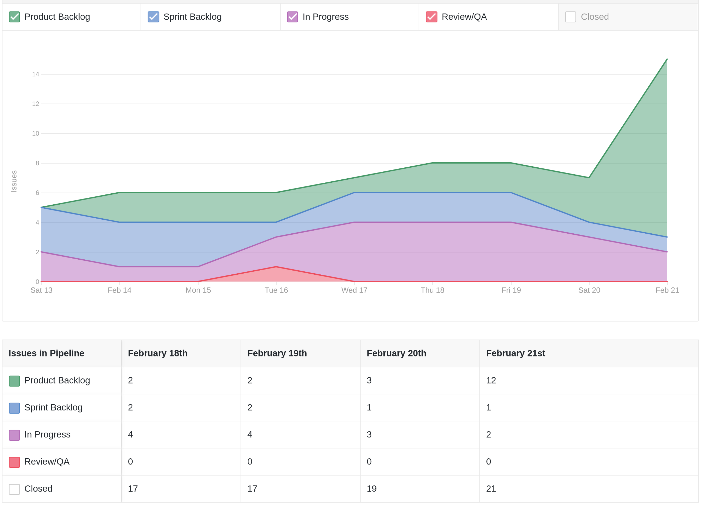
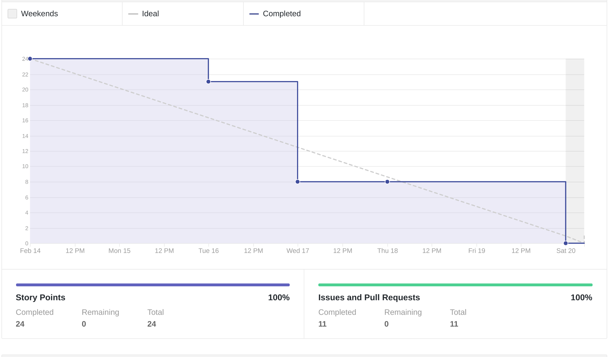
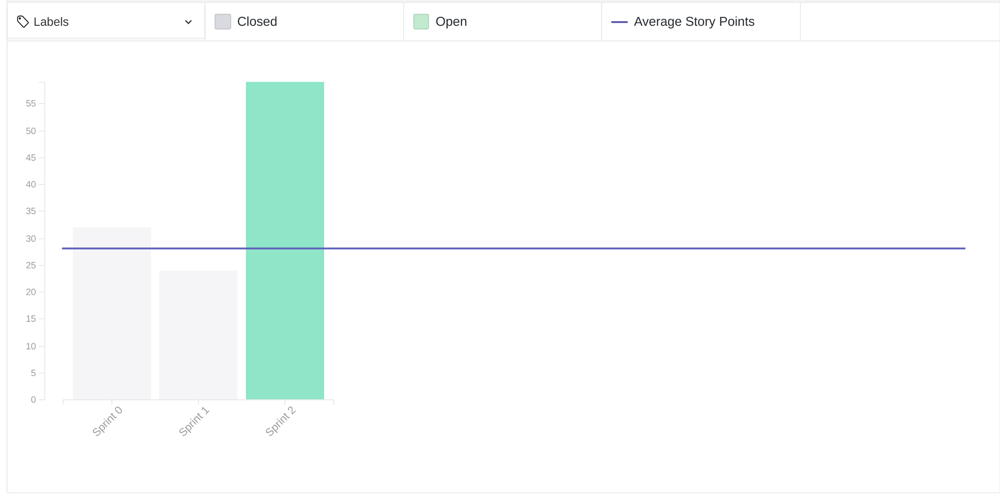
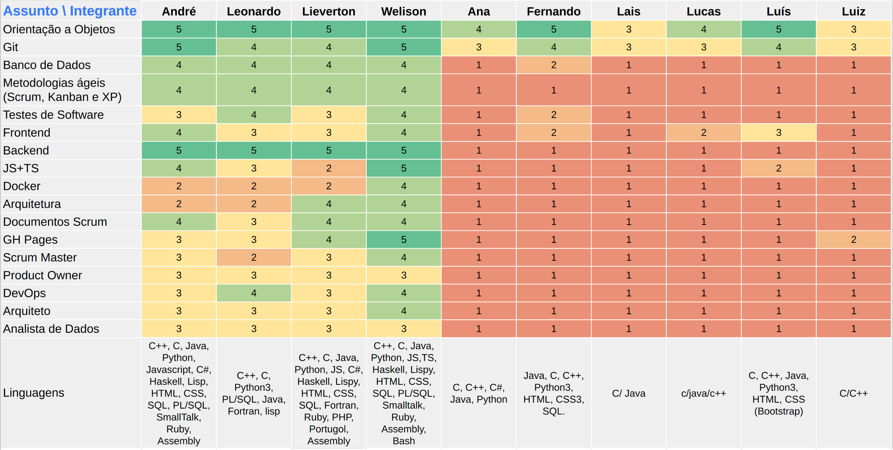
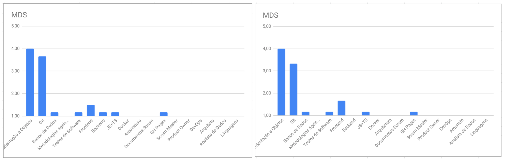

Review da sprint 1
Histórico de revisão
| Data | Autor | Modificações | Versão |
|---|---|---|---|
| 25/02/2021 | Welison Regis | Adiciona revisão e retrospectiva da sprint 1 | 1.0 |
Visão Geral
| Duração da sprint | Planejado | Entregue | Divida técnica | Membros ausentes |
|---|---|---|---|---|
| 13/02/2021 a 20/02/2021 | 24 pontos | 24 pontos | - | Nenhum |
Tarefas Realizadas
| Tarefa | Pontos | Responsáveis | Concluída? |
|---|---|---|---|
| Criar documento de contribuição do repositório | 3 | Welison Regis e Lieverton Silva |  |
| Criar documento de código de conduta | 2 | Leonardo Medeiro | |
| Criar landing page para a wiki | 5 | Lieverton Silva | |
| Documentar sprint 0 | 5 | Welison Regis | |
| Dojo de python e programação orientada a objetos | 8 | André Lucas e Leonardo Medeiro | |
| Levantamento de dúvidas sobre o projeto | 1 | Todos os membros | |
Cumulative Flow

Burndown

Velocity

Quadro de Conhecimentos
Antes
Depois

Antes x Depois por assunto

Retrospectiva
Pontos Positivos
- Excelente revisão de Git
- Proatividade de >>ALGUNS<< membros
- Excelente revisão de python
- Arrumamos um tema UHUL
- Muitas reuniões pontuais e proveitosas
- Equipe entusiasmada com o trabalho
- Dojo de Python
- Professora disponível a ajudar com o projeto
- Melhoria de comunicação entre a equipe
- Grupo de EPS tem sido bem organizado e auxilia bem os MDS
- Temos um tema
- A professora parece animada pra ajudar a gente
- Ter cliente ajuda no aprendizado e entender melhor uma situacao da vida real
Pontos de Melhoria
- Dificuldade de definir um tema com o professor
- Conversa com Hilmer/Altaci pode ser feita de forma melhor?
- Mais trabalho em equipe
- Alguns membros de mds não estão se mostrando tão animados/proativos como outros
- Mais iniciativa e compromentimento para resolver problemas
- Não ter reuniões em horário de almoço
- Melhor noção de que já estamos atrasados e o projeto é longo
- Melhorar nos aprendizados de tecnologia e da teoria necessária para realizar o projeto
- Começar a definir missões/metas individuais/dupla
- MDS não tá ligando a câmera :(
Medidas a serem tomadas
- Melhorar distribuição das issues no início da sprint
- Promover novos treinamentos e materiais de estudo em tecnologias
- Delegar mais atividades a membros de MDS e definir as metas individuais e de pareamento
- Com o tema definido, começar a delinear o seu escopo
- Envolver todos os membros da equipe no sentido de mostrar que é importante haver a colaboração de todos
Avaliação do Scrum Master
Conforme pode-se observar no gráfico cumulative flow, a equipe atendeu bem as demandas planejadas para a semana, observado que as issues que restaram em progresso se referem a atividades de aprendizagem contínua (estudo de tecnologias e metodologias). Além disso, pode-se observar que houve novos planejamentos de atividades após o fim da sprint 1, representada pelo incremento do backlog do produto.
O burndown revela que os 24 pontos foram bem distribuídos e desempenhados ao longo da semana, fora o fato de que se conseguiu atingir os pontos planejados para a sprint. Já o velocity da sprint 1, embora um pouco abaixo da média se comparado a sprint passada, indica que o foco da equipe tem sido no estudo e aplicação das tecnologias e metodologias, além da iniciação do projeto propriamente dito, que ocorreu na sexta-feira com uma entrevista com a PO.
O quadro de conhecimentos indica que os integrantes ainda estão timidamente se apropriando do conhecimento das tecnologias e metodologias desempenhadas na disciplina, o que levanta a necessidade de adotar medidas para que o conhecimento da equipe se torne melhor e mais homogêneo.
De modo geral, percebe-se que será necessário acelerar atividades relacionadas ao tema, melhorar o trabalho em equipe através de atividades colaborativas e investir mais em conhecimento e treinamento da equipe.